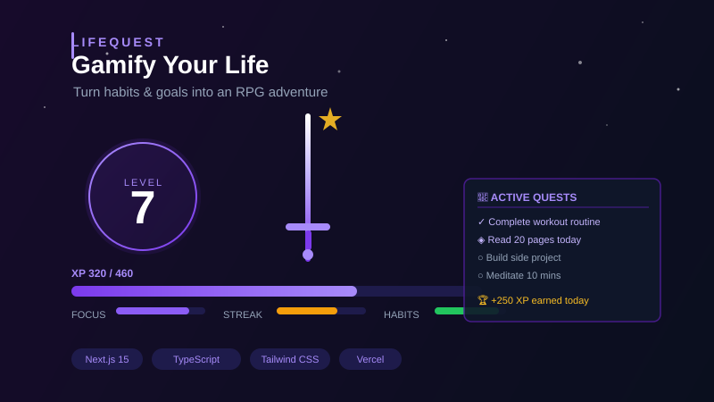

Feb. 2025
Upload a customer CSV and get instant exit-risk scores powered by a Gradient Boosting model trained on your own data — no configuration needed.
📊 Ranked risk scores per customer
🔬 Feature importance chart (why they leave)
⚠️ Data quality warnings
📥 Export results to CSV
🔒 Secure — data never stored
⚡ Full-stack: Next.js 15 + FastAPI + scikit-learn


Turn daily habits and goals into an RPG adventure. Level up by completing real-life quests, track streaks, and earn XP. Built with Next.js 15, TypeScript, and Tailwind CSS — deployed on Vercel.

Deploy fine-tuned LLMs and GPT chat models for secure business integration. React framework with cost-efficient API requests, PII-safe chat logs, automated data collection, and RAG assistance.

Deploy supervised training/testing models with python code to explore the intersection of supervised machine learning algorithms and weather data to drive ClimateWins forward.

Utilizing supervised and unsupervised machine learning techniques with python to analyze top-view characteristics of yacht and boat listings on an online seller platform.

Using a predictive model to identify and segment banking members with a high likelihood of either exiting the bank or remaining as active or non-active members.

Utilizing python to conduct an initial data and exploratory analysis for Instacart to uncover sales patterns, derive insights, and segmentation strategies.

Utilizing SQL querying with relational databases to understand, prepare, and answer business questions for an online video rental company.

Analyzing trends for a medical staffing agency during influenza season, ensuring proactive national staffing planning for increased demand. (public data)

Utilizing Excel to optimize 2017 marketing budget for maximum ROI. Guide the executive board through results and facilitate informed budget redistribution decisions.

As a graduate of CareerFoundry, all of my data analysis projects apply up-to-data ethics principles and practices to real-world scenarios using open-source data and/or fabricated data for educational purposes only.